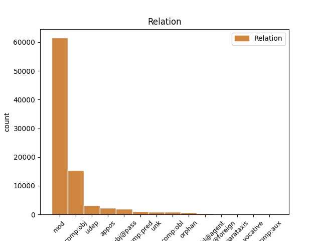
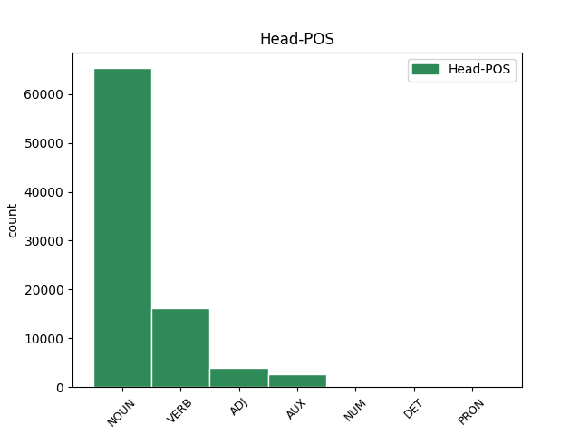
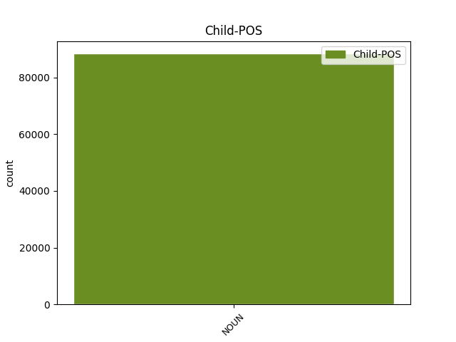

Distribution of features within this leaf



Agreement Rules sorted by frequency.
- When the dependent token is the modifer(mod) of the head token, and the head token is NOUN and the dependent token is NOUN.
1 Výpočty _ _ _ _ 0 _ _ _
2 totiž _ _ _ _ 0 _ _ _
3 naznačují _ _ _ _ 0 _ _ _
4 , _ _ _ _ 0 _ _ _
5 že _ _ _ _ 0 _ _ _
6 při _ _ _ _ 0 _ _ _
7 srážce srážka NOUN NNFS6-----A---- Case=Loc|Gender=Fem|Number=Sing|Polarity=Pos 0 _ _ _
8 Země země NOUN NNFS2-----A---- Case=Gen|Gender=Fem|Number=Sing|Polarity=Pos 7 mod _ _
9 s _ _ _ _ 0 _ _ _
10 10 _ _ _ _ 0 _ _ _
11 km _ _ _ _ 0 _ _ _
12 planetkou _ _ _ _ 0 _ _ _
13 by _ _ _ _ 0 _ _ _
14 bezprostředně _ _ _ _ 0 _ _ _
15 po _ _ _ _ 0 _ _ _
16 dopadu _ _ _ _ 0 _ _ _
17 zahynula _ _ _ _ 0 _ _ _
18 čtvrtina _ _ _ _ 0 _ _ _
19 lidské _ _ _ _ 0 _ _ _
20 populace _ _ _ _ 0 _ _ _
21 a _ _ _ _ 0 _ _ _
22 zbylí _ _ _ _ 0 _ _ _
23 " _ _ _ _ 0 _ _ _
24 živí _ _ _ _ 0 _ _ _
25 by _ _ _ _ 0 _ _ _
26 záviděli _ _ _ _ 0 _ _ _
27 mrtvým _ _ _ _ 0 _ _ _
28 " _ _ _ _ 0 _ _ _
29 . _ _ _ _ 0 _ _ _
1 Otec _ _ _ _ 0 _ _ _
2 americké _ _ _ _ 0 _ _ _
3 vodíkové _ _ _ _ 0 _ _ _
4 pumy _ _ _ _ 0 _ _ _
5 Edward _ _ _ _ 0 _ _ _
6 Teller _ _ _ _ 0 _ _ _
7 se _ _ _ _ 0 _ _ _
8 už _ _ _ _ 0 _ _ _
9 nechal _ _ _ _ 0 _ _ _
10 slyšet _ _ _ _ 0 _ _ _
11 , _ _ _ _ 0 _ _ _
12 že _ _ _ _ 0 _ _ _
13 by _ _ _ _ 0 _ _ _
14 se _ _ _ _ 0 _ _ _
15 mohla _ _ _ _ 0 _ _ _
16 vyvinout _ _ _ _ 0 _ _ _
17 kosmická _ _ _ _ 0 _ _ _
18 bomba _ _ _ _ 0 _ _ _
19 na _ _ _ _ 0 _ _ _
20 úrovni _ _ _ _ 0 _ _ _
21 sto _ _ _ _ 0 _ _ _
22 gigatun _ _ _ _ 0 _ _ _
23 ( _ _ _ _ 0 _ _ _
24 ! _ _ _ _ 0 _ _ _
25 ! _ _ _ _ 0 _ _ _
26 ) _ _ _ _ 0 _ _ _
27 TNT _ _ _ _ 0 _ _ _
28 , _ _ _ _ 0 _ _ _
29 což _ _ _ _ 0 _ _ _
30 vyvolalo vyvolat VERB VpNS---XR-AA--- Aspect=Perf|Gender=Neut|Number=Sing|Polarity=Pos|Tense=Past|VerbForm=Part|Voice=Act 0 _ _ _
31 zděšení zděšení NOUN NNNS4-----A---- Case=Acc|Gender=Neut|Number=Sing|Polarity=Pos 30 comp:obj _ LDeriv=zděsit
32 mezi _ _ _ _ 0 _ _ _
33 astronomy _ _ _ _ 0 _ _ _
34 i _ _ _ _ 0 _ _ _
35 novináři _ _ _ _ 0 _ _ _
36 . _ _ _ _ 0 _ _ _
1 Vojáci _ _ _ _ 0 _ _ _
2 však _ _ _ _ 0 _ _ _
3 nezaháleli _ _ _ _ 0 _ _ _
4 a _ _ _ _ 0 _ _ _
5 pilně _ _ _ _ 0 _ _ _
6 sledovali _ _ _ _ 0 _ _ _
7 astronomický _ _ _ _ 0 _ _ _
8 pokrok _ _ _ _ 0 _ _ _
9 při _ _ _ _ 0 _ _ _
10 objevování _ _ _ _ 0 _ _ _
11 nových _ _ _ _ 0 _ _ _
12 planetek _ _ _ _ 0 _ _ _
13 : _ _ _ _ 0 _ _ _
14 čím _ _ _ _ 0 _ _ _
15 více _ _ _ _ 0 _ _ _
16 planetek _ _ _ _ 0 _ _ _
17 , _ _ _ _ 0 _ _ _
18 tím _ _ _ _ 0 _ _ _
19 více _ _ _ _ 0 _ _ _
20 cílů _ _ _ _ 0 _ _ _
21 - _ _ _ _ 0 _ _ _
22 to _ _ _ _ 0 _ _ _
23 je _ _ _ _ 0 _ _ _
24 přece _ _ _ _ 0 _ _ _
25 analogie _ _ _ _ 0 _ _ _
26 problému _ _ _ _ 0 _ _ _
27 hvězdných _ _ _ _ 0 _ _ _
28 válek _ _ _ _ 0 _ _ _
29 v _ _ _ _ 0 _ _ _
30 podobě _ _ _ _ 0 _ _ _
31 strategické _ _ _ _ 0 _ _ _
32 obranné _ _ _ _ 0 _ _ _
33 iniciativy iniciativa NOUN NNFS2-----A---- Case=Gen|Gender=Fem|Number=Sing|Polarity=Pos 0 _ _ _
34 ( _ _ _ _ 0 _ _ _
35 SDI SDI NOUN NNFXX-----A---8 Abbr=Yes|Foreign=Yes|Gender=Fem|Polarity=Pos 33 appos _ LGloss=(Strategic_Defense_Initiative)|LId=SDI-1|SpaceAfter=No
36 ) _ _ _ _ 0 _ _ _
37 , _ _ _ _ 0 _ _ _
38 kdy _ _ _ _ 0 _ _ _
39 nepřítel _ _ _ _ 0 _ _ _
40 vypouští _ _ _ _ 0 _ _ _
41 tisíce _ _ _ _ 0 _ _ _
42 raket _ _ _ _ 0 _ _ _
43 a _ _ _ _ 0 _ _ _
44 ještě _ _ _ _ 0 _ _ _
45 více _ _ _ _ 0 _ _ _
46 klamných _ _ _ _ 0 _ _ _
47 cílů _ _ _ _ 0 _ _ _
48 , _ _ _ _ 0 _ _ _
49 a _ _ _ _ 0 _ _ _
50 ty _ _ _ _ 0 _ _ _
51 rakety _ _ _ _ 0 _ _ _
52 je _ _ _ _ 0 _ _ _
53 zapotřebí _ _ _ _ 0 _ _ _
54 bezpečně _ _ _ _ 0 _ _ _
55 zneškodnit _ _ _ _ 0 _ _ _
56 do _ _ _ _ 0 _ _ _
57 posledního _ _ _ _ 0 _ _ _
58 kusu _ _ _ _ 0 _ _ _
59 . _ _ _ _ 0 _ _ _
1 Britové _ _ _ _ 0 _ _ _
2 tomuto _ _ _ _ 0 _ _ _
3 posunu posun NOUN NNIS3-----A---- Animacy=Inan|Case=Dat|Gender=Masc|Number=Sing|Polarity=Pos 19 comp:obj _ _
4 od _ _ _ _ 0 _ _ _
5 ideologie _ _ _ _ 0 _ _ _
6 " _ _ _ _ 0 _ _ _
7 veřejné _ _ _ _ 0 _ _ _
8 péče _ _ _ _ 0 _ _ _
9 " _ _ _ _ 0 _ _ _
10 k _ _ _ _ 0 _ _ _
11 ideologii _ _ _ _ 0 _ _ _
12 " _ _ _ _ 0 _ _ _
13 tržního _ _ _ _ 0 _ _ _
14 státu _ _ _ _ 0 _ _ _
15 " _ _ _ _ 0 _ _ _
16 jsou _ _ _ _ 0 _ _ _
17 už _ _ _ _ 0 _ _ _
18 údajně _ _ _ _ 0 _ _ _
19 přivyklí přivyklý ADJ AAMP1----1A---- Animacy=Anim|Case=Nom|Degree=Pos|Gender=Masc|Number=Plur|Polarity=Pos 0 _ _ _
20 . _ _ _ _ 0 _ _ _
1 Teller _ _ _ _ 0 _ _ _
2 se _ _ _ _ 0 _ _ _
3 bránil bránit VERB VpYS---XR-AA--- Gender=Masc|Number=Sing|Polarity=Pos|Tense=Past|VerbForm=Part|Voice=Act 0 _ _ _
4 charakteristickým _ _ _ _ 0 _ _ _
5 způsobem způsob NOUN NNIS7-----A---- Animacy=Inan|Case=Ins|Gender=Masc|Number=Sing|Polarity=Pos 3 udep _ SpaceAfter=No
6 : _ _ _ _ 0 _ _ _
7 " _ _ _ _ 0 _ _ _
8 Každý _ _ _ _ 0 _ _ _
9 kojenec _ _ _ _ 0 _ _ _
10 se _ _ _ _ 0 _ _ _
11 dá _ _ _ _ 0 _ _ _
12 jednou _ _ _ _ 0 _ _ _
13 zneužít _ _ _ _ 0 _ _ _
14 pro _ _ _ _ 0 _ _ _
15 agresívní _ _ _ _ 0 _ _ _
16 útok _ _ _ _ 0 _ _ _
17 - _ _ _ _ 0 _ _ _
18 znamená _ _ _ _ 0 _ _ _
19 to _ _ _ _ 0 _ _ _
20 snad _ _ _ _ 0 _ _ _
21 , _ _ _ _ 0 _ _ _
22 že _ _ _ _ 0 _ _ _
23 máme _ _ _ _ 0 _ _ _
24 přestat _ _ _ _ 0 _ _ _
25 s _ _ _ _ 0 _ _ _
26 výrobou _ _ _ _ 0 _ _ _
27 dětí _ _ _ _ 0 _ _ _
28 ? _ _ _ _ 0 _ _ _
29 " _ _ _ _ 0 _ _ _
1 Mezi _ _ _ _ 0 _ _ _
2 nejúspěšnější _ _ _ _ 0 _ _ _
3 zařízení _ _ _ _ 0 _ _ _
4 tohoto _ _ _ _ 0 _ _ _
5 druhu _ _ _ _ 0 _ _ _
6 patří _ _ _ _ 0 _ _ _
7 Maksutova _ _ _ _ 0 _ _ _
8 komora _ _ _ _ 0 _ _ _
9 na _ _ _ _ 0 _ _ _
10 Kleti _ _ _ _ 0 _ _ _
11 v _ _ _ _ 0 _ _ _
12 jižních _ _ _ _ 0 _ _ _
13 Čechách _ _ _ _ 0 _ _ _
14 , _ _ _ _ 0 _ _ _
15 kde _ _ _ _ 0 _ _ _
16 bylo být AUX VpNS---XR-AA--- Gender=Neut|Number=Sing|Polarity=Pos|Tense=Past|VerbForm=Part|Voice=Act 0 _ _ _
17 v _ _ _ _ 0 _ _ _
18 uplynulých _ _ _ _ 0 _ _ _
19 desetiletích _ _ _ _ 0 _ _ _
20 zejména _ _ _ _ 0 _ _ _
21 zásluhou _ _ _ _ 0 _ _ _
22 A _ _ _ _ 0 _ _ _
23 . _ _ _ _ 0 _ _ _
24 Mrkose _ _ _ _ 0 _ _ _
25 objeveno _ _ _ _ 0 _ _ _
26 několik _ _ _ _ 0 _ _ _
27 set sto NOUN NNNP2-----A---- Case=Gen|Gender=Neut|Number=Plur|Polarity=Pos 16 subj@pass _ LId=sto-2|LNumValue=100
28 planetek _ _ _ _ 0 _ _ _
29 a _ _ _ _ 0 _ _ _
30 také _ _ _ _ 0 _ _ _
31 několik _ _ _ _ 0 _ _ _
32 komet _ _ _ _ 0 _ _ _
33 . _ _ _ _ 0 _ _ _
1 V _ _ _ _ 0 _ _ _
2 ochozu _ _ _ _ 0 _ _ _
3 vysokého _ _ _ _ 0 _ _ _
4 kůru _ _ _ _ 0 _ _ _
5 před _ _ _ _ 0 _ _ _
6 kaplí _ _ _ _ 0 _ _ _
7 Vlašskou _ _ _ _ 0 _ _ _
8 , _ _ _ _ 0 _ _ _
9 kde _ _ _ _ 0 _ _ _
10 býval bývat AUX VpYS---XR-AA--- Aspect=Imp|Gender=Masc|Number=Sing|Polarity=Pos|Tense=Past|VerbForm=Part|Voice=Act 0 _ _ _
11 Jan _ _ _ _ 0 _ _ _
12 z _ _ _ _ 0 _ _ _
13 Pomuku _ _ _ _ 0 _ _ _
14 oltářníkem oltářník NOUN NNMS7-----A---- Animacy=Anim|Case=Ins|Gender=Masc|Number=Sing|Polarity=Pos 10 comp:pred _ SpaceAfter=No
15 , _ _ _ _ 0 _ _ _
16 zůstalo _ _ _ _ 0 _ _ _
17 tělo _ _ _ _ 0 _ _ _
18 netknuto _ _ _ _ 0 _ _ _
19 323 _ _ _ _ 0 _ _ _
20 let _ _ _ _ 0 _ _ _
21 . _ _ _ _ 0 _ _ _
1 I _ _ _ _ 0 _ _ _
2 když _ _ _ _ 0 _ _ _
3 Anton _ _ _ _ 0 _ _ _
4 Markoš _ _ _ _ 0 _ _ _
5 asi _ _ _ _ 0 _ _ _
6 přesvědčil přesvědčit VERB VpYS---XR-AA--- Aspect=Perf|Gender=Masc|Number=Sing|Polarity=Pos|Tense=Past|VerbForm=Part|Voice=Act 0 _ _ _
7 čtenáře čtenář NOUN NNMP4-----A---- Animacy=Anim|Case=Acc|Gender=Masc|Number=Plur|Polarity=Pos 6 comp:obl _ _
8 Vesmíru _ _ _ _ 0 _ _ _
9 , _ _ _ _ 0 _ _ _
10 že _ _ _ _ 0 _ _ _
11 je _ _ _ _ 0 _ _ _
12 možný _ _ _ _ 0 _ _ _
13 život _ _ _ _ 0 _ _ _
14 bez _ _ _ _ 0 _ _ _
15 kyslíku _ _ _ _ 0 _ _ _
16 ( _ _ _ _ 0 _ _ _
17 Vesmír _ _ _ _ 0 _ _ _
18 71 _ _ _ _ 0 _ _ _
19 , _ _ _ _ 0 _ _ _
20 305 _ _ _ _ 0 _ _ _
21 , _ _ _ _ 0 _ _ _
22 1992 _ _ _ _ 0 _ _ _
23 ) _ _ _ _ 0 _ _ _
24 , _ _ _ _ 0 _ _ _
25 je _ _ _ _ 0 _ _ _
26 oxybióza _ _ _ _ 0 _ _ _
27 podmínkou _ _ _ _ 0 _ _ _
28 vyšších _ _ _ _ 0 _ _ _
29 forem _ _ _ _ 0 _ _ _
30 života _ _ _ _ 0 _ _ _
31 , _ _ _ _ 0 _ _ _
32 včetně _ _ _ _ 0 _ _ _
33 lidské _ _ _ _ 0 _ _ _
34 . _ _ _ _ 0 _ _ _
1 na _ _ _ _ 0 _ _ _
2 kosmické _ _ _ _ 0 _ _ _
3 střelnici _ _ _ _ 0 _ _ _
4 zvané zvaný ADJ AAFS6----1A---- Case=Loc|Degree=Pos|Gender=Fem|Number=Sing|Polarity=Pos 0 _ _ _
5 sluneční _ _ _ _ 0 _ _ _
6 soustava soustava NOUN NNFS1-----A---- Case=Nom|Gender=Fem|Number=Sing|Polarity=Pos 4 udep _ _
7 to _ _ _ _ 0 _ _ _
8 bude _ _ _ _ 0 _ _ _
9 téměř _ _ _ _ 0 _ _ _
10 jistě _ _ _ _ 0 _ _ _
11 člověk _ _ _ _ 0 _ _ _
12 , _ _ _ _ 0 _ _ _
13 kdo _ _ _ _ 0 _ _ _
14 vytasí _ _ _ _ 0 _ _ _
15 jako _ _ _ _ 0 _ _ _
16 prvý _ _ _ _ 0 _ _ _
17 . _ _ _ _ 0 _ _ _
1 Při _ _ _ _ 0 _ _ _
2 podobném _ _ _ _ 0 _ _ _
3 studiu _ _ _ _ 0 _ _ _
4 si _ _ _ _ 0 _ _ _
5 toho _ _ _ _ 0 _ _ _
6 všiml _ _ _ _ 0 _ _ _
7 již _ _ _ _ 0 _ _ _
8 H _ _ _ _ 0 _ _ _
9 . _ _ _ _ 0 _ _ _
10 Sienkiewicz _ _ _ _ 0 _ _ _
11 , _ _ _ _ 0 _ _ _
12 který _ _ _ _ 0 _ _ _
13 ústy _ _ _ _ 0 _ _ _
14 jednoho _ _ _ _ 0 _ _ _
15 ze _ _ _ _ 0 _ _ _
16 svých _ _ _ _ 0 _ _ _
17 hrdinů hrdina NOUN NNMP2-----A---- Animacy=Anim|Case=Gen|Gender=Masc|Number=Plur|Polarity=Pos 0 _ _ _
18 ( _ _ _ _ 0 _ _ _
19 Křižáci křižák NOUN NNMP1-----A---- Animacy=Anim|Case=Nom|Gender=Masc|Number=Plur|Polarity=Pos 17 unk _ SpaceAfter=No
20 ) _ _ _ _ 0 _ _ _
21 při _ _ _ _ 0 _ _ _
22 výčtu _ _ _ _ 0 _ _ _
23 předností _ _ _ _ 0 _ _ _
24 rytířů _ _ _ _ 0 _ _ _
25 jednotlivých _ _ _ _ 0 _ _ _
26 křesťanských _ _ _ _ 0 _ _ _
27 národů _ _ _ _ 0 _ _ _
28 říká _ _ _ _ 0 _ _ _
29 : _ _ _ _ 0 _ _ _
30 " _ _ _ _ 0 _ _ _
31 . _ _ _ _ 0 _ _ _
32 . _ _ _ _ 0 _ _ _
33 . _ _ _ _ 0 _ _ _
1 Z _ _ _ _ 0 _ _ _
2 nich _ _ _ _ 0 _ _ _
3 se _ _ _ _ 0 _ _ _
4 k _ _ _ _ 0 _ _ _
5 Zemi _ _ _ _ 0 _ _ _
6 nejvíce _ _ _ _ 0 _ _ _
7 přiblížila _ _ _ _ 0 _ _ _
8 planetka _ _ _ _ 0 _ _ _
9 Toutatis _ _ _ _ 0 _ _ _
10 s _ _ _ _ 0 _ _ _
11 pořadovým _ _ _ _ 0 _ _ _
12 číslem _ _ _ _ 0 _ _ _
13 4179 _ _ _ _ 0 _ _ _
14 , _ _ _ _ 0 _ _ _
15 objevená _ _ _ _ 0 _ _ _
16 francouzskými _ _ _ _ 0 _ _ _
17 astronomy _ _ _ _ 0 _ _ _
18 počátkem počátek NOUN NNIS7-----A---- Animacy=Inan|Case=Ins|Gender=Masc|Number=Sing|Polarity=Pos 0 _ _ _
19 r rok NOUN NNIXX-----A---8 Abbr=Yes|Animacy=Inan|Gender=Masc|Polarity=Pos 18 comp:obj _ SpaceAfter=No
20 . _ _ _ _ 0 _ _ _
21 1989 _ _ _ _ 0 _ _ _
22 . _ _ _ _ 0 _ _ _
1 Náklady _ _ _ _ 0 _ _ _
2 na _ _ _ _ 0 _ _ _
3 vývoj _ _ _ _ 0 _ _ _
4 detekčního _ _ _ _ 0 _ _ _
5 systému _ _ _ _ 0 _ _ _
6 se _ _ _ _ 0 _ _ _
7 odhadují _ _ _ _ 0 _ _ _
8 v _ _ _ _ 0 _ _ _
9 desítkách _ _ _ _ 0 _ _ _
10 miliónů _ _ _ _ 0 _ _ _
11 dolarů _ _ _ _ 0 _ _ _
12 , _ _ _ _ 0 _ _ _
13 průzkum _ _ _ _ 0 _ _ _
14 planetek _ _ _ _ 0 _ _ _
15 zblízka _ _ _ _ 0 _ _ _
16 by _ _ _ _ 0 _ _ _
17 stál _ _ _ _ 0 _ _ _
18 stovky _ _ _ _ 0 _ _ _
19 miliónů _ _ _ _ 0 _ _ _
20 dolarů _ _ _ _ 0 _ _ _
21 a _ _ _ _ 0 _ _ _
22 pravé _ _ _ _ 0 _ _ _
23 hvězdné _ _ _ _ 0 _ _ _
24 války válka NOUN NNFP1-----A---- Case=Nom|Gender=Fem|Number=Plur|Polarity=Pos 0 _ _ _
25 desítky desítka NOUN NNFP4-----A---- Case=Acc|Gender=Fem|Number=Plur|Polarity=Pos 24 orphan _ _
26 miliard _ _ _ _ 0 _ _ _
27 dolarů _ _ _ _ 0 _ _ _
28 , _ _ _ _ 0 _ _ _
29 což _ _ _ _ 0 _ _ _
30 je _ _ _ _ 0 _ _ _
31 ovšem _ _ _ _ 0 _ _ _
32 mnohem _ _ _ _ 0 _ _ _
33 méně _ _ _ _ 0 _ _ _
34 , _ _ _ _ 0 _ _ _
35 než _ _ _ _ 0 _ _ _
36 ztráty _ _ _ _ 0 _ _ _
37 , _ _ _ _ 0 _ _ _
38 které _ _ _ _ 0 _ _ _
39 by _ _ _ _ 0 _ _ _
40 způsobila _ _ _ _ 0 _ _ _
41 jediná _ _ _ _ 0 _ _ _
42 katastrofální _ _ _ _ 0 _ _ _
43 srážka _ _ _ _ 0 _ _ _
44 s _ _ _ _ 0 _ _ _
45 tělesem _ _ _ _ 0 _ _ _
46 o _ _ _ _ 0 _ _ _
47 průměru _ _ _ _ 0 _ _ _
48 nad _ _ _ _ 0 _ _ _
49 1 _ _ _ _ 0 _ _ _
50 km _ _ _ _ 0 _ _ _
51 , _ _ _ _ 0 _ _ _
52 které _ _ _ _ 0 _ _ _
53 by _ _ _ _ 0 _ _ _
54 dopadlo _ _ _ _ 0 _ _ _
55 na _ _ _ _ 0 _ _ _
56 obydlenou _ _ _ _ 0 _ _ _
57 část _ _ _ _ 0 _ _ _
58 zeměkoule _ _ _ _ 0 _ _ _
59 . _ _ _ _ 0 _ _ _
1 Doposud _ _ _ _ 0 _ _ _
2 se _ _ _ _ 0 _ _ _
3 uznávali uznávat VERB VpMP---XR-AA--- Animacy=Anim|Aspect=Imp|Gender=Masc|Number=Plur|Polarity=Pos|Tense=Past|VerbForm=Part|Voice=Act 0 _ _ _
4 za _ _ _ _ 0 _ _ _
5 vnímavé _ _ _ _ 0 _ _ _
6 pro _ _ _ _ 0 _ _ _
7 HIV _ _ _ _ 0 _ _ _
8 jen _ _ _ _ 0 _ _ _
9 šimpanzi šimpanz NOUN NNMP1-----A---- Animacy=Anim|Case=Nom|Gender=Masc|Number=Plur|Polarity=Pos 3 subj@pass _ SpaceAfter=No
10 , _ _ _ _ 0 _ _ _
11 kteří _ _ _ _ 0 _ _ _
12 však _ _ _ _ 0 _ _ _
13 nejevili _ _ _ _ 0 _ _ _
14 žádné _ _ _ _ 0 _ _ _
15 známky _ _ _ _ 0 _ _ _
16 onemocnění _ _ _ _ 0 _ _ _
17 . _ _ _ _ 0 _ _ _
1 31 _ _ _ _ 0 _ _ _
2 . _ _ _ _ 0 _ _ _
3 5 _ _ _ _ 0 _ _ _
4 . _ _ _ _ 0 _ _ _
5 1721 _ _ _ _ 0 _ _ _
6 byl _ _ _ _ 0 _ _ _
7 Jan _ _ _ _ 0 _ _ _
8 z _ _ _ _ 0 _ _ _
9 Pomuku _ _ _ _ 0 _ _ _
10 prohlášen prohlášený ADJ VsYS---XX-AP--- Gender=Masc|Number=Sing|Polarity=Pos|Variant=Short|VerbForm=Part|Voice=Pass 0 _ _ _
11 papežem papež NOUN NNMS7-----A---- Animacy=Anim|Case=Ins|Gender=Masc|Number=Sing|Polarity=Pos 10 comp:obl@agent _ _
12 Innocencem _ _ _ _ 0 _ _ _
13 XIII _ _ _ _ 0 _ _ _
14 . _ _ _ _ 0 _ _ _
15 za _ _ _ _ 0 _ _ _
16 blahoslaveného _ _ _ _ 0 _ _ _
17 . _ _ _ _ 0 _ _ _
1 Studiem studium NOUN NNNS7-----A---- Case=Ins|Gender=Neut|Number=Sing|Polarity=Pos 4 udep _ _
2 soudobých _ _ _ _ 0 _ _ _
3 pramenů _ _ _ _ 0 _ _ _
4 bylo být AUX VpNS---XR-AA--- Gender=Neut|Number=Sing|Polarity=Pos|Tense=Past|VerbForm=Part|Voice=Act 0 _ _ _
5 paralelně _ _ _ _ 0 _ _ _
6 ověřováno _ _ _ _ 0 _ _ _
7 , _ _ _ _ 0 _ _ _
8 zda _ _ _ _ 0 _ _ _
9 právě _ _ _ _ 0 _ _ _
10 tyto _ _ _ _ 0 _ _ _
11 činnosti _ _ _ _ 0 _ _ _
12 byly _ _ _ _ 0 _ _ _
13 našimi _ _ _ _ 0 _ _ _
14 předky _ _ _ _ 0 _ _ _
15 provozovány _ _ _ _ 0 _ _ _
16 natolik _ _ _ _ 0 _ _ _
17 úspěšně _ _ _ _ 0 _ _ _
18 , _ _ _ _ 0 _ _ _
19 aby _ _ _ _ 0 _ _ _
20 by _ _ _ _ 0 _ _ _
21 to _ _ _ _ 0 _ _ _
22 např _ _ _ _ 0 _ _ _
23 . _ _ _ _ 0 _ _ _
24 stálo _ _ _ _ 0 _ _ _
25 za _ _ _ _ 0 _ _ _
26 zmínku _ _ _ _ 0 _ _ _
27 soudobému _ _ _ _ 0 _ _ _
28 zpravodaji _ _ _ _ 0 _ _ _
29 , _ _ _ _ 0 _ _ _
30 přednostně _ _ _ _ 0 _ _ _
31 nezaujatému _ _ _ _ 0 _ _ _
32 cizinci _ _ _ _ 0 _ _ _
33 . _ _ _ _ 0 _ _ _
1 Nadšení _ _ _ _ 0 _ _ _
2 ovšem _ _ _ _ 0 _ _ _
3 vyvolala _ _ _ _ 0 _ _ _
4 Meadowsova _ _ _ _ 0 _ _ _
5 studie _ _ _ _ 0 _ _ _
6 mezi _ _ _ _ 0 _ _ _
7 zelenými zelený ADJ AAFP7----1A---- Case=Ins|Degree=Pos|Gender=Fem|Number=Plur|Polarity=Pos 0 _ _ _
8 většiny většina NOUN NNFS2-----A---- Case=Gen|Gender=Fem|Number=Sing|Polarity=Pos 7 mod _ _
9 odstínů _ _ _ _ 0 _ _ _
10 . _ _ _ _ 0 _ _ _
1 Výpočty _ _ _ _ 0 _ _ _
2 totiž _ _ _ _ 0 _ _ _
3 naznačují _ _ _ _ 0 _ _ _
4 , _ _ _ _ 0 _ _ _
5 že _ _ _ _ 0 _ _ _
6 při _ _ _ _ 0 _ _ _
7 srážce _ _ _ _ 0 _ _ _
8 Země _ _ _ _ 0 _ _ _
9 s _ _ _ _ 0 _ _ _
10 10 _ _ _ _ 0 _ _ _
11 km _ _ _ _ 0 _ _ _
12 planetkou _ _ _ _ 0 _ _ _
13 by _ _ _ _ 0 _ _ _
14 bezprostředně _ _ _ _ 0 _ _ _
15 po _ _ _ _ 0 _ _ _
16 dopadu _ _ _ _ 0 _ _ _
17 zahynula _ _ _ _ 0 _ _ _
18 čtvrtina čtvrtina NUM CyFS1---------- Case=Nom|Gender=Fem|Number=Sing|NumType=Frac 0 _ _ _
19 lidské _ _ _ _ 0 _ _ _
20 populace populace NOUN NNFS2-----A---- Case=Gen|Gender=Fem|Number=Sing|Polarity=Pos 18 mod _ _
21 a _ _ _ _ 0 _ _ _
22 zbylí _ _ _ _ 0 _ _ _
23 " _ _ _ _ 0 _ _ _
24 živí _ _ _ _ 0 _ _ _
25 by _ _ _ _ 0 _ _ _
26 záviděli _ _ _ _ 0 _ _ _
27 mrtvým _ _ _ _ 0 _ _ _
28 " _ _ _ _ 0 _ _ _
29 . _ _ _ _ 0 _ _ _
1 V _ _ _ _ 0 _ _ _
2 létě _ _ _ _ 0 _ _ _
3 1991 _ _ _ _ 0 _ _ _
4 jsem _ _ _ _ 0 _ _ _
5 uveřejnil uveřejnit VERB VpYS---XR-AA--- Aspect=Perf|Gender=Masc|Number=Sing|Polarity=Pos|Tense=Past|VerbForm=Part|Voice=Act 0 _ _ _
6 krátkou _ _ _ _ 0 _ _ _
7 poznámku _ _ _ _ 0 _ _ _
8 ( _ _ _ _ 0 _ _ _
9 Vesmír vesmír NOUN NNIS1-----A---- Animacy=Inan|Case=Nom|Gender=Masc|Number=Sing|Polarity=Pos 5 unk _ _
10 70 _ _ _ _ 0 _ _ _
11 , _ _ _ _ 0 _ _ _
12 322 _ _ _ _ 0 _ _ _
13 , _ _ _ _ 0 _ _ _
14 1991 _ _ _ _ 0 _ _ _
15 ) _ _ _ _ 0 _ _ _
16 o _ _ _ _ 0 _ _ _
17 riziku _ _ _ _ 0 _ _ _
18 , _ _ _ _ 0 _ _ _
19 kterému _ _ _ _ 0 _ _ _
20 je _ _ _ _ 0 _ _ _
21 Země _ _ _ _ 0 _ _ _
22 neustále _ _ _ _ 0 _ _ _
23 vystavena _ _ _ _ 0 _ _ _
24 v _ _ _ _ 0 _ _ _
25 podobě _ _ _ _ 0 _ _ _
26 střetu _ _ _ _ 0 _ _ _
27 s _ _ _ _ 0 _ _ _
28 větším _ _ _ _ 0 _ _ _
29 úlomkem _ _ _ _ 0 _ _ _
30 meziplanetární _ _ _ _ 0 _ _ _
31 hmoty _ _ _ _ 0 _ _ _
32 : _ _ _ _ 0 _ _ _
33 planetkou _ _ _ _ 0 _ _ _
34 nebo _ _ _ _ 0 _ _ _
35 jádrem _ _ _ _ 0 _ _ _
36 komety _ _ _ _ 0 _ _ _
37 . _ _ _ _ 0 _ _ _
1 R _ _ _ _ 0 _ _ _
2 . _ _ _ _ 0 _ _ _
3 1721 _ _ _ _ 0 _ _ _
4 byla _ _ _ _ 0 _ _ _
5 relikvie _ _ _ _ 0 _ _ _
6 " _ _ _ _ 0 _ _ _
7 jazyka _ _ _ _ 0 _ _ _
8 " _ _ _ _ 0 _ _ _
9 vložena _ _ _ _ 0 _ _ _
10 do _ _ _ _ 0 _ _ _
11 nové _ _ _ _ 0 _ _ _
12 schránky _ _ _ _ 0 _ _ _
13 rozměrů _ _ _ _ 0 _ _ _
14 44 _ _ _ _ 0 _ _ _
15 x _ _ _ _ 0 _ _ _
16 14 _ _ _ _ 0 _ _ _
17 cm _ _ _ _ 0 _ _ _
18 a _ _ _ _ 0 _ _ _
19 tento _ _ _ _ 0 _ _ _
20 relikviář relikviář NOUN NNIS1-----A---- Animacy=Inan|Case=Nom|Gender=Masc|Number=Sing|Polarity=Pos 21 subj@pass _ _
21 vložen vložený ADJ VsYS---XX-AP--- Aspect=Perf|Gender=Masc|Number=Sing|Polarity=Pos|Variant=Short|VerbForm=Part|Voice=Pass 0 _ _ _
22 do _ _ _ _ 0 _ _ _
23 monstrance _ _ _ _ 0 _ _ _
24 a _ _ _ _ 0 _ _ _
25 v _ _ _ _ 0 _ _ _
26 ní _ _ _ _ 0 _ _ _
27 zapečetěn _ _ _ _ 0 _ _ _
28 . _ _ _ _ 0 _ _ _
1 Nelze _ _ _ _ 0 _ _ _
2 vyloučit _ _ _ _ 0 _ _ _
3 , _ _ _ _ 0 _ _ _
4 že _ _ _ _ 0 _ _ _
5 v _ _ _ _ 0 _ _ _
6 zemích _ _ _ _ 0 _ _ _
7 , _ _ _ _ 0 _ _ _
8 které _ _ _ _ 0 _ _ _
9 v _ _ _ _ 0 _ _ _
10 posledních _ _ _ _ 0 _ _ _
11 desetiletích _ _ _ _ 0 _ _ _
12 dosáhly _ _ _ _ 0 _ _ _
13 výrazného _ _ _ _ 0 _ _ _
14 prodloužení _ _ _ _ 0 _ _ _
15 lidského _ _ _ _ 0 _ _ _
16 života _ _ _ _ 0 _ _ _
17 , _ _ _ _ 0 _ _ _
18 se _ _ _ _ 0 _ _ _
19 kromě _ _ _ _ 0 _ _ _
20 změn _ _ _ _ 0 _ _ _
21 v _ _ _ _ 0 _ _ _
22 životním _ _ _ _ 0 _ _ _
23 stylu _ _ _ _ 0 _ _ _
24 ( _ _ _ _ 0 _ _ _
25 nekouření _ _ _ _ 0 _ _ _
26 , _ _ _ _ 0 _ _ _
27 pohyb _ _ _ _ 0 _ _ _
28 , _ _ _ _ 0 _ _ _
29 hubenost _ _ _ _ 0 _ _ _
30 , _ _ _ _ 0 _ _ _
31 vlákniny _ _ _ _ 0 _ _ _
32 v _ _ _ _ 0 _ _ _
33 potravě _ _ _ _ 0 _ _ _
34 ) _ _ _ _ 0 _ _ _
35 uplatňují _ _ _ _ 0 _ _ _
36 i _ _ _ _ 0 _ _ _
37 přirozené přirozený ADJ AAIP1----1A---- Animacy=Inan|Case=Nom|Degree=Pos|Gender=Masc|Number=Plur|Polarity=Pos 0 _ _ _
38 ( _ _ _ _ 0 _ _ _
39 vitamíny vitamín NOUN NNIP1-----A---- Animacy=Inan|Case=Nom|Gender=Masc|Number=Plur|Polarity=Pos 37 unk _ _
40 ze _ _ _ _ 0 _ _ _
41 zeleniny _ _ _ _ 0 _ _ _
42 a _ _ _ _ 0 _ _ _
43 ovoce _ _ _ _ 0 _ _ _
44 ) _ _ _ _ 0 _ _ _
45 a _ _ _ _ 0 _ _ _
46 umělé _ _ _ _ 0 _ _ _
47 antioxidanty _ _ _ _ 0 _ _ _
48 , _ _ _ _ 0 _ _ _
49 přidávané _ _ _ _ 0 _ _ _
50 do _ _ _ _ 0 _ _ _
51 potravin _ _ _ _ 0 _ _ _
52 . _ _ _ _ 0 _ _ _
1 Meadows _ _ _ _ 0 _ _ _
2 se _ _ _ _ 0 _ _ _
3 svou _ _ _ _ 0 _ _ _
4 ženou _ _ _ _ 0 _ _ _
5 Donellou _ _ _ _ 0 _ _ _
6 a _ _ _ _ 0 _ _ _
7 dalšími _ _ _ _ 0 _ _ _
8 16 _ _ _ _ 0 _ _ _
9 spolupracovníky _ _ _ _ 0 _ _ _
10 pracovali _ _ _ _ 0 _ _ _
11 na _ _ _ _ 0 _ _ _
12 počítačových _ _ _ _ 0 _ _ _
13 systémech _ _ _ _ 0 _ _ _
14 massachusettské _ _ _ _ 0 _ _ _
15 techniky _ _ _ _ 0 _ _ _
16 ( _ _ _ _ 0 _ _ _
17 MIT _ _ _ _ 0 _ _ _
18 ) _ _ _ _ 0 _ _ _
19 a _ _ _ _ 0 _ _ _
20 soustředili _ _ _ _ 0 _ _ _
21 se _ _ _ _ 0 _ _ _
22 na _ _ _ _ 0 _ _ _
23 pět _ _ _ _ 0 _ _ _
24 charakteristik _ _ _ _ 0 _ _ _
25 : _ _ _ _ 0 _ _ _
26 růst _ _ _ _ 0 _ _ _
27 industrializace _ _ _ _ 0 _ _ _
28 , _ _ _ _ 0 _ _ _
29 zvětšování _ _ _ _ 0 _ _ _
30 počtu počet NOUN NNIS2-----A---- Animacy=Inan|Case=Gen|Gender=Masc|Number=Sing|Polarity=Pos 0 _ _ _
31 obyvatel obyvatel NOUN NNMS1-----A---- Animacy=Anim|Case=Nom|Gender=Masc|Number=Sing|Polarity=Pos 30 udep _ SpaceAfter=No
32 , _ _ _ _ 0 _ _ _
33 světová _ _ _ _ 0 _ _ _
34 podvýživa _ _ _ _ 0 _ _ _
35 , _ _ _ _ 0 _ _ _
36 vyčerpávání _ _ _ _ 0 _ _ _
37 zdrojů _ _ _ _ 0 _ _ _
38 surovin _ _ _ _ 0 _ _ _
39 a _ _ _ _ 0 _ _ _
40 znečišťování _ _ _ _ 0 _ _ _
41 životního _ _ _ _ 0 _ _ _
42 prostředí _ _ _ _ 0 _ _ _
43 . _ _ _ _ 0 _ _ _
1 Interferuje _ _ _ _ 0 _ _ _
2 s _ _ _ _ 0 _ _ _
3 účinky _ _ _ _ 0 _ _ _
4 obou _ _ _ _ 0 _ _ _
5 hmyzích _ _ _ _ 0 _ _ _
6 metamorfózních _ _ _ _ 0 _ _ _
7 hormonů _ _ _ _ 0 _ _ _
8 - _ _ _ _ 0 _ _ _
9 se _ _ _ _ 0 _ _ _
10 svlékacím svlékací ADJ AAIS7----1A---- Animacy=Inan|Case=Ins|Degree=Pos|Gender=Masc|Number=Sing|Polarity=Pos 0 _ _ _
11 ( _ _ _ _ 0 _ _ _
12 ekdysonem ekdyson NOUN NNIS7-----A---- Animacy=Inan|Case=Ins|Gender=Masc|Number=Sing|Polarity=Pos 10 appos _ SpaceAfter=No
13 ) _ _ _ _ 0 _ _ _
14 a _ _ _ _ 0 _ _ _
15 s _ _ _ _ 0 _ _ _
16 juvenilním _ _ _ _ 0 _ _ _
17 hormonem _ _ _ _ 0 _ _ _
18 . _ _ _ _ 0 _ _ _
1 [ _ _ _ _ 0 _ _ _
2 Man man NOUN NNNXX-----A---- Foreign=Yes|Gender=Neut|Polarity=Pos 0 _ _ _
3 hu hu NOUN NNNXX-----A---- Foreign=Yes|Gender=Neut|Polarity=Pos 2 flat@foreign _ SpaceAfter=No
4 ? _ _ _ _ 0 _ _ _
5 ptali _ _ _ _ 0 _ _ _
6 jsme _ _ _ _ 0 _ _ _
7 se _ _ _ _ 0 _ _ _
8 jako _ _ _ _ 0 _ _ _
9 dávní _ _ _ _ 0 _ _ _
10 Israelité _ _ _ _ 0 _ _ _
11 : _ _ _ _ 0 _ _ _
12 - _ _ _ _ 0 _ _ _
13 co _ _ _ _ 0 _ _ _
14 jest _ _ _ _ 0 _ _ _
15 to _ _ _ _ 0 _ _ _
16 ? _ _ _ _ 0 _ _ _
17 ] _ _ _ _ 0 _ _ _
1 Spojené _ _ _ _ 0 _ _ _
2 státy _ _ _ _ 0 _ _ _
3 cítily _ _ _ _ 0 _ _ _
4 , _ _ _ _ 0 _ _ _
5 že _ _ _ _ 0 _ _ _
6 mohou _ _ _ _ 0 _ _ _
7 ztratit _ _ _ _ 0 _ _ _
8 jednu jeden NUM ClFS4---------- Case=Acc|Gender=Fem|Number=Sing|NumForm=Word|NumType=Card|NumValue=1,2,3 0 _ _ _
9 ze _ _ _ _ 0 _ _ _
10 svých _ _ _ _ 0 _ _ _
11 hlavních _ _ _ _ 0 _ _ _
12 zbraní _ _ _ _ 0 _ _ _
13 proti _ _ _ _ 0 _ _ _
14 Sovětskému _ _ _ _ 0 _ _ _
15 svazu _ _ _ _ 0 _ _ _
16 - _ _ _ _ 0 _ _ _
17 pšenici pšenice NOUN NNFS4-----A---- Case=Acc|Gender=Fem|Number=Sing|Polarity=Pos 8 appos _ SpaceAfter=No
18 . _ _ _ _ 0 _ _ _
1 Nahoře _ _ _ _ 0 _ _ _
2 hřbetní hřbetní ADJ AAFS1----1A---- Case=Nom|Degree=Pos|Gender=Fem|Number=Sing|Polarity=Pos 0 _ _ _
3 , _ _ _ _ 0 _ _ _
4 dole _ _ _ _ 0 _ _ _
5 břišní _ _ _ _ 0 _ _ _
6 strana strana NOUN NNFS1-----A---- Case=Nom|Gender=Fem|Number=Sing|Polarity=Pos 2 orphan _ LGloss=(v_prostoru)|LId=strana-1
7 těla _ _ _ _ 0 _ _ _
8 . _ _ _ _ 0 _ _ _
1 Netradičné netradičný ADJ AAIP1----1A---- Animacy=Inan|Case=Nom|Degree=Pos|Foreign=Yes|Gender=Masc|Number=Plur|Polarity=Pos 0 _ _ _
2 prístupy prístup NOUN NNIP1-----A---- Animacy=Inan|Case=Nom|Foreign=Yes|Gender=Masc|Number=Plur|Polarity=Pos 1 flat@foreign _ _
3 k _ _ _ _ 0 _ _ _
4 sekvencovaniu _ _ _ _ 0 _ _ _
5 DNA _ _ _ _ 0 _ _ _
6 / _ _ _ _ 0 _ _ _
1 Náplň _ _ _ _ 0 _ _ _
2 přírodovědných _ _ _ _ 0 _ _ _
3 předmětů _ _ _ _ 0 _ _ _
4 musí _ _ _ _ 0 _ _ _
5 být _ _ _ _ 0 _ _ _
6 ovšem _ _ _ _ 0 _ _ _
7 uzpůsobena _ _ _ _ 0 _ _ _
8 tak _ _ _ _ 0 _ _ _
9 , _ _ _ _ 0 _ _ _
10 aby _ _ _ _ 0 _ _ _
11 by _ _ _ _ 0 _ _ _
12 vybavila _ _ _ _ 0 _ _ _
13 přírodovědnými _ _ _ _ 0 _ _ _
14 poznatky _ _ _ _ 0 _ _ _
15 právě _ _ _ _ 0 _ _ _
16 toho ten DET PDMS4---------- Animacy=Anim|Case=Acc|Gender=Masc|Number=Sing|PronType=Dem 0 _ _ _
17 , _ _ _ _ 0 _ _ _
18 kdo _ _ _ _ 0 _ _ _
19 už _ _ _ _ 0 _ _ _
20 s _ _ _ _ 0 _ _ _
21 přírodními _ _ _ _ 0 _ _ _
22 vědami _ _ _ _ 0 _ _ _
23 do _ _ _ _ 0 _ _ _
24 styku _ _ _ _ 0 _ _ _
25 nepřijde _ _ _ _ 0 _ _ _
26 : _ _ _ _ 0 _ _ _
27 budoucího _ _ _ _ 0 _ _ _
28 ekonoma ekonom NOUN NNMS4-----A---- Animacy=Anim|Case=Acc|Gender=Masc|Number=Sing|Polarity=Pos 16 appos _ SpaceAfter=No
29 , _ _ _ _ 0 _ _ _
30 právníka _ _ _ _ 0 _ _ _
31 , _ _ _ _ 0 _ _ _
32 filologa _ _ _ _ 0 _ _ _
33 . _ _ _ _ 0 _ _ _
1 Avšak _ _ _ _ 0 _ _ _
2 velký _ _ _ _ 0 _ _ _
3 objekt _ _ _ _ 0 _ _ _
4 - _ _ _ _ 0 _ _ _
5 kočka _ _ _ _ 0 _ _ _
6 nebo _ _ _ _ 0 _ _ _
7 Geigerův _ _ _ _ 0 _ _ _
8 čítač _ _ _ _ 0 _ _ _
9 - _ _ _ _ 0 _ _ _
10 obsahuje _ _ _ _ 0 _ _ _
11 trilióny _ _ _ _ 0 _ _ _
12 triliónů _ _ _ _ 0 _ _ _
13 částic _ _ _ _ 0 _ _ _
14 , _ _ _ _ 0 _ _ _
15 což _ _ _ _ 0 _ _ _
16 má _ _ _ _ 0 _ _ _
17 za _ _ _ _ 0 _ _ _
18 následek _ _ _ _ 0 _ _ _
19 nespočet spočíst VERB VmYS------N---- Aspect=Perf|Gender=Masc|Number=Sing|Polarity=Neg|Tense=Past|VerbForm=Conv|Voice=Act 0 _ _ _
20 kolapsů kolaps NOUN NNIP2-----A---- Animacy=Inan|Case=Gen|Gender=Masc|Number=Plur|Polarity=Pos 19 mod _ _
21 v _ _ _ _ 0 _ _ _
22 libovolný _ _ _ _ 0 _ _ _
23 okamžik _ _ _ _ 0 _ _ _
24 . _ _ _ _ 0 _ _ _
1 V _ _ _ _ 0 _ _ _
2 té _ _ _ _ 0 _ _ _
3 první _ _ _ _ 0 _ _ _
4 někdo někdo PRON PZM-1---------- Animacy=Anim|Case=Nom|Gender=Masc|PronType=Ind 0 _ _ _
5 - _ _ _ _ 0 _ _ _
6 parlament parlament NOUN NNIS1-----A---- Animacy=Inan|Case=Nom|Gender=Masc|Number=Sing|Polarity=Pos 4 appos _ SpaceAfter=No
7 , _ _ _ _ 0 _ _ _
8 noviny _ _ _ _ 0 _ _ _
9 , _ _ _ _ 0 _ _ _
10 výrobce _ _ _ _ 0 _ _ _
11 zubní _ _ _ _ 0 _ _ _
12 pasty _ _ _ _ 0 _ _ _
13 - _ _ _ _ 0 _ _ _
14 zjistí _ _ _ _ 0 _ _ _
15 , _ _ _ _ 0 _ _ _
16 že _ _ _ _ 0 _ _ _
17 by _ _ _ _ 0 _ _ _
18 potřeboval _ _ _ _ 0 _ _ _
19 znát _ _ _ _ 0 _ _ _
20 názor _ _ _ _ 0 _ _ _
21 lidí _ _ _ _ 0 _ _ _
22 na _ _ _ _ 0 _ _ _
23 cosi _ _ _ _ 0 _ _ _
24 . _ _ _ _ 0 _ _ _
1 Mnoho _ _ _ _ 0 _ _ _
2 měřících _ _ _ _ 0 _ _ _
3 stanic _ _ _ _ 0 _ _ _
4 je _ _ _ _ 0 _ _ _
5 umístěno _ _ _ _ 0 _ _ _
6 v _ _ _ _ 0 _ _ _
7 okolí _ _ _ _ 0 _ _ _
8 větších _ _ _ _ 0 _ _ _
9 měst _ _ _ _ 0 _ _ _
10 , _ _ _ _ 0 _ _ _
11 takže _ _ _ _ 0 _ _ _
12 nárůst nárůst NOUN NNIS4-----A---- Animacy=Inan|Case=Acc|Gender=Masc|Number=Sing|Polarity=Pos 0 _ _ _
13 měřených _ _ _ _ 0 _ _ _
14 hodnot _ _ _ _ 0 _ _ _
15 můžeme _ _ _ _ 0 _ _ _
16 interpretovat _ _ _ _ 0 _ _ _
17 jako _ _ _ _ 0 _ _ _
18 růst růst NOUN NNIS4-----A---- Animacy=Inan|Case=Acc|Gender=Masc|Number=Sing|Polarity=Pos 12 comp:pred _ LId=růst-1
19 města _ _ _ _ 0 _ _ _
20 , _ _ _ _ 0 _ _ _
21 nikoliv _ _ _ _ 0 _ _ _
22 změnu _ _ _ _ 0 _ _ _
23 klimatu _ _ _ _ 0 _ _ _
24 . _ _ _ _ 0 _ _ _
1 Představme _ _ _ _ 0 _ _ _
2 si _ _ _ _ 0 _ _ _
3 , _ _ _ _ 0 _ _ _
4 že _ _ _ _ 0 _ _ _
5 máme _ _ _ _ 0 _ _ _
6 molekulu _ _ _ _ 0 _ _ _
7 nukleové _ _ _ _ 0 _ _ _
8 kyseliny _ _ _ _ 0 _ _ _
9 a _ _ _ _ 0 _ _ _
10 v _ _ _ _ 0 _ _ _
11 ní on PRON P5FS6--3------- Case=Loc|Gender=Fem|Number=Sing|Person=3|PrepCase=Pre|PronType=Prs 0 _ _ _
12 oblast oblast NOUN NNFS4-----A---- Case=Acc|Gender=Fem|Number=Sing|Polarity=Pos 11 orphan _ _
13 osmi _ _ _ _ 0 _ _ _
14 bází _ _ _ _ 0 _ _ _
15 , _ _ _ _ 0 _ _ _
16 která _ _ _ _ 0 _ _ _
17 nás _ _ _ _ 0 _ _ _
18 z _ _ _ _ 0 _ _ _
19 nějakého _ _ _ _ 0 _ _ _
20 důvodu _ _ _ _ 0 _ _ _
21 zajímá _ _ _ _ 0 _ _ _
22 . _ _ _ _ 0 _ _ _
1 Lichtenberg _ _ _ _ 0 _ _ _
2 , _ _ _ _ 0 _ _ _
3 jako _ _ _ _ 0 _ _ _
4 každý každý DET AAIS1----1A---- Animacy=Inan|Case=Nom|Degree=Pos|Gender=Masc|Number=Sing|Polarity=Pos|PronType=Tot 0 _ _ _
5 jiný _ _ _ _ 0 _ _ _
6 obvod obvod NOUN NNIS1-----A---- Animacy=Inan|Case=Nom|Gender=Masc|Number=Sing|Polarity=Pos 4 mod _ SpaceAfter=No
7 , _ _ _ _ 0 _ _ _
8 je _ _ _ _ 0 _ _ _
9 pověřen _ _ _ _ 0 _ _ _
10 jen _ _ _ _ 0 _ _ _
11 správou _ _ _ _ 0 _ _ _
12 . _ _ _ _ 0 _ _ _
1 Vezměme _ _ _ _ 0 _ _ _
2 právě _ _ _ _ 0 _ _ _
3 substantivum _ _ _ _ 0 _ _ _
4 střed _ _ _ _ 0 _ _ _
5 - _ _ _ _ 0 _ _ _
6 v _ _ _ _ 0 _ _ _
7 běžném _ _ _ _ 0 _ _ _
8 úzu _ _ _ _ 0 _ _ _
9 jím _ _ _ _ 0 _ _ _
10 rozumíme _ _ _ _ 0 _ _ _
11 zhruba _ _ _ _ 0 _ _ _
12 totéž tentýž DET PDNS4---------- Case=Acc|Gender=Neut|Number=Sing|PronType=Dem 0 _ _ _
13 , _ _ _ _ 0 _ _ _
14 co _ _ _ _ 0 _ _ _
15 slovem slovo NOUN NNNS7-----A---- Case=Ins|Gender=Neut|Number=Sing|Polarity=Pos 12 unk _ _
16 prostředek _ _ _ _ 0 _ _ _
17 ( _ _ _ _ 0 _ _ _
18 v _ _ _ _ 0 _ _ _
19 jeho _ _ _ _ 0 _ _ _
20 základním _ _ _ _ 0 _ _ _
21 významu _ _ _ _ 0 _ _ _
22 ) _ _ _ _ 0 _ _ _
23 , _ _ _ _ 0 _ _ _
24 tj _ _ _ _ 0 _ _ _
25 . _ _ _ _ 0 _ _ _
26 tu _ _ _ _ 0 _ _ _
27 část _ _ _ _ 0 _ _ _
28 nějakého _ _ _ _ 0 _ _ _
29 místa _ _ _ _ 0 _ _ _
30 , _ _ _ _ 0 _ _ _
31 prostoru _ _ _ _ 0 _ _ _
32 či _ _ _ _ 0 _ _ _
33 času _ _ _ _ 0 _ _ _
34 , _ _ _ _ 0 _ _ _
35 která _ _ _ _ 0 _ _ _
36 je _ _ _ _ 0 _ _ _
37 přibližně _ _ _ _ 0 _ _ _
38 stejně _ _ _ _ 0 _ _ _
39 vzdálená _ _ _ _ 0 _ _ _
40 od _ _ _ _ 0 _ _ _
41 krajů _ _ _ _ 0 _ _ _
42 , _ _ _ _ 0 _ _ _
43 okrajů _ _ _ _ 0 _ _ _
44 , _ _ _ _ 0 _ _ _
45 začátku _ _ _ _ 0 _ _ _
46 a _ _ _ _ 0 _ _ _
47 konce _ _ _ _ 0 _ _ _
48 . _ _ _ _ 0 _ _ _
1 V _ _ _ _ 0 _ _ _
2 lidové _ _ _ _ 0 _ _ _
3 pověře _ _ _ _ 0 _ _ _
4 se _ _ _ _ 0 _ _ _
5 Jan _ _ _ _ 0 _ _ _
6 stal stát VERB VpYS---XR-AA--- Gender=Masc|Number=Sing|Polarity=Pos|Tense=Past|VerbForm=Part|Voice=Act 0 _ _ _
7 ochráncem ochránce NOUN NNMS7-----A---- Animacy=Anim|Case=Ins|Gender=Masc|Number=Sing|Polarity=Pos 6 comp:pred _ _
8 mostu _ _ _ _ 0 _ _ _
9 a _ _ _ _ 0 _ _ _
10 pánem _ _ _ _ 0 _ _ _
11 nad _ _ _ _ 0 _ _ _
12 řekou _ _ _ _ 0 _ _ _
13 . _ _ _ _ 0 _ _ _
1 Komu kdo PRON PKM-3---------- Animacy=Anim|Case=Dat|Gender=Masc|PronType=Int,Rel 0 _ _ _
2 příspěvek příspěvek NOUN NNIS4-----A---- Animacy=Inan|Case=Acc|Gender=Masc|Number=Sing|Polarity=Pos 1 unk _ _
1 Naši _ _ _ _ 0 _ _ _
2 zahraniční _ _ _ _ 0 _ _ _
3 odbojovou _ _ _ _ 0 _ _ _
4 skupinu _ _ _ _ 0 _ _ _
5 jsme _ _ _ _ 0 _ _ _
6 začali _ _ _ _ 0 _ _ _
7 budovat _ _ _ _ 0 _ _ _
8 ihned _ _ _ _ 0 _ _ _
9 v _ _ _ _ 0 _ _ _
10 létě _ _ _ _ 0 _ _ _
11 1948 _ _ _ _ 0 _ _ _
12 spolu _ _ _ _ 0 _ _ _
13 s _ _ _ _ 0 _ _ _
14 Ivanem _ _ _ _ 0 _ _ _
15 Gaďourkem _ _ _ _ 0 _ _ _
16 , _ _ _ _ 0 _ _ _
17 jakmile _ _ _ _ 0 _ _ _
18 jsme _ _ _ _ 0 _ _ _
19 se _ _ _ _ 0 _ _ _
20 dostali dostat VERB VpMP---XR-AA--- Animacy=Anim|Gender=Masc|Number=Plur|Polarity=Pos|Tense=Past|VerbForm=Part|Voice=Act 0 _ _ _
21 z _ _ _ _ 0 _ _ _
22 uprchlických _ _ _ _ 0 _ _ _
23 táborů _ _ _ _ 0 _ _ _
24 v _ _ _ _ 0 _ _ _
25 Německu _ _ _ _ 0 _ _ _
26 , _ _ _ _ 0 _ _ _
27 tedy _ _ _ _ 0 _ _ _
28 rok rok NOUN NNIS4-----A---- Animacy=Inan|Case=Acc|Gender=Masc|Number=Sing|Polarity=Pos 20 appos _ _
29 před _ _ _ _ 0 _ _ _
30 příchodem _ _ _ _ 0 _ _ _
31 dr _ _ _ _ 0 _ _ _
32 . _ _ _ _ 0 _ _ _
33 Chalupy _ _ _ _ 0 _ _ _
34 do _ _ _ _ 0 _ _ _
35 exilu _ _ _ _ 0 _ _ _
36 . _ _ _ _ 0 _ _ _
1 Odvolal _ _ _ _ 0 _ _ _
2 se _ _ _ _ 0 _ _ _
3 na _ _ _ _ 0 _ _ _
4 skutečnost _ _ _ _ 0 _ _ _
5 , _ _ _ _ 0 _ _ _
6 že _ _ _ _ 0 _ _ _
7 ze _ _ _ _ 0 _ _ _
8 14 _ _ _ _ 0 _ _ _
9 poslanců _ _ _ _ 0 _ _ _
10 HSDSMS _ _ _ _ 0 _ _ _
11 v _ _ _ _ 0 _ _ _
12 ČNR _ _ _ _ 0 _ _ _
13 jsou _ _ _ _ 0 _ _ _
14 dva _ _ _ _ 0 _ _ _
15 nezávislí _ _ _ _ 0 _ _ _
16 , _ _ _ _ 0 _ _ _
17 dva dva NUM ClYP1---------- Case=Nom|Gender=Masc|Number=Plur|NumForm=Word|NumType=Card|NumValue=1,2,3 0 _ _ _
18 členy člen NOUN NNMP7-----A---- Animacy=Anim|Case=Ins|Gender=Masc|Number=Plur|Polarity=Pos 17 orphan _ _
19 Moravské _ _ _ _ 0 _ _ _
20 národní _ _ _ _ 0 _ _ _
21 strany _ _ _ _ 0 _ _ _
22 a _ _ _ _ 0 _ _ _
23 dva _ _ _ _ 0 _ _ _
24 patří _ _ _ _ 0 _ _ _
25 k _ _ _ _ 0 _ _ _
26 Demokratické _ _ _ _ 0 _ _ _
27 straně _ _ _ _ 0 _ _ _
28 práce _ _ _ _ 0 _ _ _
29 . _ _ _ _ 0 _ _ _
1 Pořadatel pořadatel NOUN NNMS1-----A---- Animacy=Anim|Case=Nom|Gender=Masc|Number=Sing|Polarity=Pos 6 parataxis _ _
2 veletrhů _ _ _ _ 0 _ _ _
3 v _ _ _ _ 0 _ _ _
4 Plovdivu _ _ _ _ 0 _ _ _
5 : _ _ _ _ 0 _ _ _
6 Meždunaroden Meždunaroden ADJ AAIXX----1A---- Animacy=Inan|Degree=Pos|Foreign=Yes|Gender=Masc|NameType=Oth|Polarity=Pos 0 _ _ _
7 Pahair _ _ _ _ 0 _ _ _
8 - _ _ _ _ 0 _ _ _
9 Plovdiv _ _ _ _ 0 _ _ _
10 , _ _ _ _ 0 _ _ _
11 BG _ _ _ _ 0 _ _ _
12 4018 _ _ _ _ 0 _ _ _
13 Plovdiv _ _ _ _ 0 _ _ _
14 , _ _ _ _ 0 _ _ _
15 37 _ _ _ _ 0 _ _ _
16 Vuzrazhdane _ _ _ _ 0 _ _ _
17 Bivd _ _ _ _ 0 _ _ _
18 . _ _ _ _ 0 _ _ _
19 , _ _ _ _ 0 _ _ _
20 tel _ _ _ _ 0 _ _ _
21 . _ _ _ _ 0 _ _ _
22 : _ _ _ _ 0 _ _ _
23 ( _ _ _ _ 0 _ _ _
24 0035932 _ _ _ _ 0 _ _ _
25 ) _ _ _ _ 0 _ _ _
26 563191 _ _ _ _ 0 _ _ _
27 , _ _ _ _ 0 _ _ _
28 553146 _ _ _ _ 0 _ _ _
29 , _ _ _ _ 0 _ _ _
30 553120 _ _ _ _ 0 _ _ _
31 , _ _ _ _ 0 _ _ _
32 FAX _ _ _ _ 0 _ _ _
33 : _ _ _ _ 0 _ _ _
34 ( _ _ _ _ 0 _ _ _
35 0035932 _ _ _ _ 0 _ _ _
36 ) _ _ _ _ 0 _ _ _
37 265432 _ _ _ _ 0 _ _ _
38 . _ _ _ _ 0 _ _ _
1 Angličan _ _ _ _ 0 _ _ _
2 by _ _ _ _ 0 _ _ _
3 řekl _ _ _ _ 0 _ _ _
4 : _ _ _ _ 0 _ _ _
5 My my DET PSNSX-S1------- Foreign=Yes|Gender=Neut|Number=Sing|Number[psor]=Sing|Person=1|Poss=Yes|PronType=Prs 0 _ _ _
6 heart heart NOUN NNNSX-----A---- Foreign=Yes|Gender=Neut|Number=Sing|Polarity=Pos 5 flat@foreign _ _
7 wasn _ _ _ _ 0 _ _ _
8 ' _ _ _ _ 0 _ _ _
9 t _ _ _ _ 0 _ _ _
10 in _ _ _ _ 0 _ _ _
11 it _ _ _ _ 0 _ _ _
12 ( _ _ _ _ 0 _ _ _
13 nezískalo _ _ _ _ 0 _ _ _
14 si _ _ _ _ 0 _ _ _
15 to _ _ _ _ 0 _ _ _
16 mé _ _ _ _ 0 _ _ _
17 srdce _ _ _ _ 0 _ _ _
18 - _ _ _ _ 0 _ _ _
19 pozn _ _ _ _ 0 _ _ _
20 . _ _ _ _ 0 _ _ _
21 red _ _ _ _ 0 _ _ _
22 . _ _ _ _ 0 _ _ _
23 ) _ _ _ _ 0 _ _ _
24 , _ _ _ _ 0 _ _ _
25 uvedl _ _ _ _ 0 _ _ _
26 P _ _ _ _ 0 _ _ _
27 . _ _ _ _ 0 _ _ _
28 Tigrid _ _ _ _ 0 _ _ _
29 . _ _ _ _ 0 _ _ _
1 Každý _ _ _ _ 0 _ _ _
2 z _ _ _ _ 0 _ _ _
3 poslanců _ _ _ _ 0 _ _ _
4 by _ _ _ _ 0 _ _ _
5 měl _ _ _ _ 0 _ _ _
6 v _ _ _ _ 0 _ _ _
7 některé _ _ _ _ 0 _ _ _
8 z _ _ _ _ 0 _ _ _
9 celkem _ _ _ _ 0 _ _ _
10 sto _ _ _ _ 0 _ _ _
11 dvou _ _ _ _ 0 _ _ _
12 kanceláří _ _ _ _ 0 _ _ _
13 mít _ _ _ _ 0 _ _ _
14 svůj _ _ _ _ 0 _ _ _
15 stůl _ _ _ _ 0 _ _ _
16 , _ _ _ _ 0 _ _ _
17 židli _ _ _ _ 0 _ _ _
18 , _ _ _ _ 0 _ _ _
19 počítač _ _ _ _ 0 _ _ _
20 , _ _ _ _ 0 _ _ _
21 telefon _ _ _ _ 0 _ _ _
22 , _ _ _ _ 0 _ _ _
23 všichni všechen DET PLMP1---------- Animacy=Anim|Case=Nom|Gender=Masc|Number=Plur|PronType=Tot 0 _ _ _
24 dohromady _ _ _ _ 0 _ _ _
25 pak _ _ _ _ 0 _ _ _
26 nějaké _ _ _ _ 0 _ _ _
27 faxy fax NOUN NNIP4-----A---- Animacy=Inan|Case=Acc|Gender=Masc|Number=Plur|Polarity=Pos 23 orphan _ SpaceAfter=No
28 , _ _ _ _ 0 _ _ _
29 skříně _ _ _ _ 0 _ _ _
30 na _ _ _ _ 0 _ _ _
31 šaty _ _ _ _ 0 _ _ _
32 , _ _ _ _ 0 _ _ _
33 malé _ _ _ _ 0 _ _ _
34 trezory _ _ _ _ 0 _ _ _
35 a _ _ _ _ 0 _ _ _
36 ledničky _ _ _ _ 0 _ _ _
37 , _ _ _ _ 0 _ _ _
38 říká _ _ _ _ 0 _ _ _
39 ing _ _ _ _ 0 _ _ _
40 . _ _ _ _ 0 _ _ _
41 Dastych _ _ _ _ 0 _ _ _
42 . _ _ _ _ 0 _ _ _
1 Kromě _ _ _ _ 0 _ _ _
2 uvedených _ _ _ _ 0 _ _ _
3 funkcí _ _ _ _ 0 _ _ _
4 umějí _ _ _ _ 0 _ _ _
5 korektory _ _ _ _ 0 _ _ _
6 i _ _ _ _ 0 _ _ _
7 hlídat _ _ _ _ 0 _ _ _
8 vazby _ _ _ _ 0 _ _ _
9 , _ _ _ _ 0 _ _ _
10 předložkové _ _ _ _ 0 _ _ _
11 pády _ _ _ _ 0 _ _ _
12 , _ _ _ _ 0 _ _ _
13 upozorní _ _ _ _ 0 _ _ _
14 na _ _ _ _ 0 _ _ _
15 opakovaný _ _ _ _ 0 _ _ _
16 výskyt _ _ _ _ 0 _ _ _
17 téhož _ _ _ _ 0 _ _ _
18 slova _ _ _ _ 0 _ _ _
19 , _ _ _ _ 0 _ _ _
20 na _ _ _ _ 0 _ _ _
21 stylistické _ _ _ _ 0 _ _ _
22 neobratnosti _ _ _ _ 0 _ _ _
23 , _ _ _ _ 0 _ _ _
24 nadužívání _ _ _ _ 0 _ _ _
25 některých _ _ _ _ 0 _ _ _
26 slov _ _ _ _ 0 _ _ _
27 či _ _ _ _ 0 _ _ _
28 slovních _ _ _ _ 0 _ _ _
29 spojení _ _ _ _ 0 _ _ _
30 , _ _ _ _ 0 _ _ _
31 nevhodné _ _ _ _ 0 _ _ _
32 formulace formulace NOUN NNFP4-----A---- Case=Acc|Gender=Fem|Number=Plur|Polarity=Pos 0 _ _ _
33 ( _ _ _ _ 0 _ _ _
34 např _ _ _ _ 0 _ _ _
35 . _ _ _ _ 0 _ _ _
36 má _ _ _ _ 0 _ _ _
37 lásko láska NOUN NNFS5-----A---- Case=Voc|Gender=Fem|Number=Sing|Polarity=Pos 32 vocative _ _
38 v _ _ _ _ 0 _ _ _
39 obchodním _ _ _ _ 0 _ _ _
40 dopise _ _ _ _ 0 _ _ _
41 ) _ _ _ _ 0 _ _ _
42 atd _ _ _ _ 0 _ _ _
43 . _ _ _ _ 0 _ _ _
1 A _ _ _ _ 0 _ _ _
2 zrovna _ _ _ _ 0 _ _ _
3 oni on PRON PPMP1--3------- Animacy=Anim|Case=Nom|Gender=Masc|Number=Plur|Person=3|PronType=Prs 0 _ _ _
4 , _ _ _ _ 0 _ _ _
5 Pobalťané _ _ _ _ 0 _ _ _
6 , _ _ _ _ 0 _ _ _
7 začali _ _ _ _ 0 _ _ _
8 a _ _ _ _ 0 _ _ _
9 zavinili _ _ _ _ 0 _ _ _
10 rozpad rozpad NOUN NNIS4-----A---- Animacy=Inan|Case=Acc|Gender=Masc|Number=Sing|Polarity=Pos 3 mod _ _
11 SSSR _ _ _ _ 0 _ _ _
12 . _ _ _ _ 0 _ _ _
13 . _ _ _ _ 0 _ _ _
14 . _ _ _ _ 0 _ _ _
15 " _ _ _ _ 0 _ _ _
1 Vážení _ _ _ _ 0 _ _ _
2 pánové pán NOUN NNMP5-----A---- Animacy=Anim|Case=Voc|Gender=Masc|Number=Plur|Polarity=Pos 10 vocative _ SpaceAfter=No
3 , _ _ _ _ 0 _ _ _
4 v _ _ _ _ 0 _ _ _
5 pátek _ _ _ _ 0 _ _ _
6 4 _ _ _ _ 0 _ _ _
7 . _ _ _ _ 0 _ _ _
8 září _ _ _ _ 0 _ _ _
9 1992 _ _ _ _ 0 _ _ _
10 odpověděl odpovědět VERB VpYS---XR-AA--- Gender=Masc|Number=Sing|Polarity=Pos|Tense=Past|VerbForm=Part|Voice=Act 0 _ _ _
11 zástupce _ _ _ _ 0 _ _ _
12 vaší _ _ _ _ 0 _ _ _
13 firmy _ _ _ _ 0 _ _ _
14 pan _ _ _ _ 0 _ _ _
15 Milan _ _ _ _ 0 _ _ _
16 Smutný _ _ _ _ 0 _ _ _
17 redaktorovi _ _ _ _ 0 _ _ _
18 MF _ _ _ _ 0 _ _ _
19 DNES _ _ _ _ 0 _ _ _
20 na _ _ _ _ 0 _ _ _
21 otázku _ _ _ _ 0 _ _ _
22 , _ _ _ _ 0 _ _ _
23 zda _ _ _ _ 0 _ _ _
24 se _ _ _ _ 0 _ _ _
25 do _ _ _ _ 0 _ _ _
26 výroby _ _ _ _ 0 _ _ _
27 dostane _ _ _ _ 0 _ _ _
28 také _ _ _ _ 0 _ _ _
29 kdysi _ _ _ _ 0 _ _ _
30 slibovaná _ _ _ _ 0 _ _ _
31 levnější _ _ _ _ 0 _ _ _
32 verze _ _ _ _ 0 _ _ _
33 FAVORITA _ _ _ _ 0 _ _ _
34 takto _ _ _ _ 0 _ _ _
35 : _ _ _ _ 0 _ _ _
36 " _ _ _ _ 0 _ _ _
37 Ne _ _ _ _ 0 _ _ _
38 . _ _ _ _ 0 _ _ _
1 Pramen pramen NOUN NNIS1-----A---- Animacy=Inan|Case=Nom|Gender=Masc|Number=Sing|Polarity=Pos 5 parataxis _ SpaceAfter=No
2 : _ _ _ _ 0 _ _ _
3 Federální _ _ _ _ 0 _ _ _
4 statistický _ _ _ _ 0 _ _ _
5 úřad úřad NOUN NNIS1-----A---- Animacy=Inan|Case=Nom|Gender=Masc|Number=Sing|Polarity=Pos 0 _ _ _
1 Ekonomický _ _ _ _ 0 _ _ _
2 reformátor reformátor NOUN NNMS1-----A---- Animacy=Anim|Case=Nom|Gender=Masc|Number=Sing|Polarity=Pos 8 comp:aux _ _
3 Vo _ _ _ _ 0 _ _ _
4 - _ _ _ _ 0 _ _ _
5 van _ _ _ _ 0 _ _ _
6 - _ _ _ _ 0 _ _ _
7 Kiet _ _ _ _ 0 _ _ _
8 byl být AUX VpYS---XR-AA--- Gender=Masc|Number=Sing|Polarity=Pos|Tense=Past|VerbForm=Part|Voice=Act 0 _ _ _
9 zvolen _ _ _ _ 0 _ _ _
10 tajným _ _ _ _ 0 _ _ _
11 hlasováním _ _ _ _ 0 _ _ _
12 v _ _ _ _ 0 _ _ _
13 Národním _ _ _ _ 0 _ _ _
14 shromáždění _ _ _ _ 0 _ _ _
15 včera _ _ _ _ 0 _ _ _
16 ráno _ _ _ _ 0 _ _ _
17 . _ _ _ _ 0 _ _ _
Disagree Examples:
1 Hlasité _ _ _ _ 0 _ _ _
2 přečtení přečtení NOUN NNNS1-----A---- Case=Nom|Gender=Neut|Number=Sing|Polarity=Pos 0 _ _ _
3 dobře _ _ _ _ 0 _ _ _
4 čitelného _ _ _ _ 0 _ _ _
5 textu text NOUN NNIS2-----A---- Animacy=Inan|Case=Gen|Gender=Masc|Number=Sing|Polarity=Pos 2 mod _ _
6 na _ _ _ _ 0 _ _ _
7 stránce _ _ _ _ 0 _ _ _
8 A _ _ _ _ 0 _ _ _
9 4 _ _ _ _ 0 _ _ _
10 , _ _ _ _ 0 _ _ _
11 při _ _ _ _ 0 _ _ _
12 řádkování _ _ _ _ 0 _ _ _
13 1.5 _ _ _ _ 0 _ _ _
14 , _ _ _ _ 0 _ _ _
15 trvá _ _ _ _ 0 _ _ _
16 zhruba _ _ _ _ 0 _ _ _
17 3 _ _ _ _ 0 _ _ _
18 minuty _ _ _ _ 0 _ _ _
19 . _ _ _ _ 0 _ _ _
1 Podle _ _ _ _ 0 _ _ _
2 prospektů _ _ _ _ 0 _ _ _
3 se _ _ _ _ 0 _ _ _
4 faxem _ _ _ _ 0 _ _ _
5 přenese _ _ _ _ 0 _ _ _
6 normalizovaný _ _ _ _ 0 _ _ _
7 obsah obsah NOUN NNIS1-----A---- Animacy=Inan|Case=Nom|Gender=Masc|Number=Sing|Polarity=Pos 0 _ _ _
8 jedné _ _ _ _ 0 _ _ _
9 stránky stránka NOUN NNFS2-----A---- Case=Gen|Gender=Fem|Number=Sing|Polarity=Pos 7 mod _ _
10 A _ _ _ _ 0 _ _ _
11 4 _ _ _ _ 0 _ _ _
12 za _ _ _ _ 0 _ _ _
13 10 _ _ _ _ 0 _ _ _
14 až _ _ _ _ 0 _ _ _
15 30 _ _ _ _ 0 _ _ _
16 sekund _ _ _ _ 0 _ _ _
17 . _ _ _ _ 0 _ _ _
1 Ve _ _ _ _ 0 _ _ _
2 skutečnosti _ _ _ _ 0 _ _ _
3 to _ _ _ _ 0 _ _ _
4 sice _ _ _ _ 0 _ _ _
5 trvá _ _ _ _ 0 _ _ _
6 zhruba _ _ _ _ 0 _ _ _
7 minutu _ _ _ _ 0 _ _ _
8 , _ _ _ _ 0 _ _ _
9 protože _ _ _ _ 0 _ _ _
10 doba doba NOUN NNFS1-----A---- Case=Nom|Gender=Fem|Number=Sing|Polarity=Pos 0 _ _ _
11 přenosu přenos NOUN NNIS2-----A---- Animacy=Inan|Case=Gen|Gender=Masc|Number=Sing|Polarity=Pos 10 mod _ _
12 více _ _ _ _ 0 _ _ _
13 závisí _ _ _ _ 0 _ _ _
14 na _ _ _ _ 0 _ _ _
15 stavu _ _ _ _ 0 _ _ _
16 telefonní _ _ _ _ 0 _ _ _
17 linky _ _ _ _ 0 _ _ _
18 než _ _ _ _ 0 _ _ _
19 na _ _ _ _ 0 _ _ _
20 rychlosti _ _ _ _ 0 _ _ _
21 přístroje _ _ _ _ 0 _ _ _
22 , _ _ _ _ 0 _ _ _
23 ale _ _ _ _ 0 _ _ _
24 i _ _ _ _ 0 _ _ _
25 tak _ _ _ _ 0 _ _ _
26 je _ _ _ _ 0 _ _ _
27 přenos _ _ _ _ 0 _ _ _
28 informace _ _ _ _ 0 _ _ _
29 faxem _ _ _ _ 0 _ _ _
30 zhruba _ _ _ _ 0 _ _ _
31 třikrát _ _ _ _ 0 _ _ _
32 rychlejší _ _ _ _ 0 _ _ _
33 než _ _ _ _ 0 _ _ _
34 řeč _ _ _ _ 0 _ _ _
35 . _ _ _ _ 0 _ _ _
1 Ve _ _ _ _ 0 _ _ _
2 skutečnosti _ _ _ _ 0 _ _ _
3 to _ _ _ _ 0 _ _ _
4 sice _ _ _ _ 0 _ _ _
5 trvá _ _ _ _ 0 _ _ _
6 zhruba _ _ _ _ 0 _ _ _
7 minutu _ _ _ _ 0 _ _ _
8 , _ _ _ _ 0 _ _ _
9 protože _ _ _ _ 0 _ _ _
10 doba _ _ _ _ 0 _ _ _
11 přenosu _ _ _ _ 0 _ _ _
12 více _ _ _ _ 0 _ _ _
13 závisí _ _ _ _ 0 _ _ _
14 na _ _ _ _ 0 _ _ _
15 stavu stav NOUN NNIS6-----A---- Animacy=Inan|Case=Loc|Gender=Masc|Number=Sing|Polarity=Pos 0 _ _ _
16 telefonní _ _ _ _ 0 _ _ _
17 linky linka NOUN NNFS2-----A---- Case=Gen|Gender=Fem|Number=Sing|Polarity=Pos 15 mod _ _
18 než _ _ _ _ 0 _ _ _
19 na _ _ _ _ 0 _ _ _
20 rychlosti _ _ _ _ 0 _ _ _
21 přístroje _ _ _ _ 0 _ _ _
22 , _ _ _ _ 0 _ _ _
23 ale _ _ _ _ 0 _ _ _
24 i _ _ _ _ 0 _ _ _
25 tak _ _ _ _ 0 _ _ _
26 je _ _ _ _ 0 _ _ _
27 přenos _ _ _ _ 0 _ _ _
28 informace _ _ _ _ 0 _ _ _
29 faxem _ _ _ _ 0 _ _ _
30 zhruba _ _ _ _ 0 _ _ _
31 třikrát _ _ _ _ 0 _ _ _
32 rychlejší _ _ _ _ 0 _ _ _
33 než _ _ _ _ 0 _ _ _
34 řeč _ _ _ _ 0 _ _ _
35 . _ _ _ _ 0 _ _ _
1 Ve _ _ _ _ 0 _ _ _
2 skutečnosti _ _ _ _ 0 _ _ _
3 to _ _ _ _ 0 _ _ _
4 sice _ _ _ _ 0 _ _ _
5 trvá _ _ _ _ 0 _ _ _
6 zhruba _ _ _ _ 0 _ _ _
7 minutu _ _ _ _ 0 _ _ _
8 , _ _ _ _ 0 _ _ _
9 protože _ _ _ _ 0 _ _ _
10 doba _ _ _ _ 0 _ _ _
11 přenosu _ _ _ _ 0 _ _ _
12 více _ _ _ _ 0 _ _ _
13 závisí _ _ _ _ 0 _ _ _
14 na _ _ _ _ 0 _ _ _
15 stavu _ _ _ _ 0 _ _ _
16 telefonní _ _ _ _ 0 _ _ _
17 linky _ _ _ _ 0 _ _ _
18 než _ _ _ _ 0 _ _ _
19 na _ _ _ _ 0 _ _ _
20 rychlosti rychlost NOUN NNFS6-----A---- Case=Loc|Gender=Fem|Number=Sing|Polarity=Pos 0 _ _ _
21 přístroje přístroj NOUN NNIS2-----A---- Animacy=Inan|Case=Gen|Gender=Masc|Number=Sing|Polarity=Pos 20 mod _ SpaceAfter=No
22 , _ _ _ _ 0 _ _ _
23 ale _ _ _ _ 0 _ _ _
24 i _ _ _ _ 0 _ _ _
25 tak _ _ _ _ 0 _ _ _
26 je _ _ _ _ 0 _ _ _
27 přenos _ _ _ _ 0 _ _ _
28 informace _ _ _ _ 0 _ _ _
29 faxem _ _ _ _ 0 _ _ _
30 zhruba _ _ _ _ 0 _ _ _
31 třikrát _ _ _ _ 0 _ _ _
32 rychlejší _ _ _ _ 0 _ _ _
33 než _ _ _ _ 0 _ _ _
34 řeč _ _ _ _ 0 _ _ _
35 . _ _ _ _ 0 _ _ _